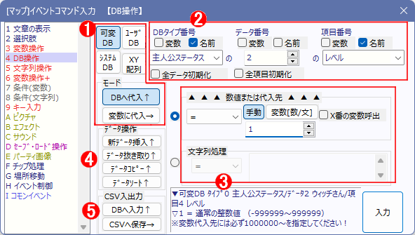

イベントコマンド 【DB（データベース）操作】
各「データベース」や「XY配列」から値を読み込んだり、値を変更したり、データ操作したりすることができます。

※【前提知識】 「DB」と「XY配列」について
・データベース：タイプごとに、「項目」として「変数」か「文字列」のどちらかを入力できるボックスを最大100個並べて構成することが可能な「データの入れ物」です。あらかじめ「（可変/ユーザ/システム）データベースウィンドウ」で項目を設定しておく必要があります。「データ番号」は0～9999、「項目番号」は0～99の範囲で指定できます。
・XY配列：数値のみ格納できる二次元配列で、DBの「タイプ、データ番号、項目番号」と同じく、「配列番号/名前」「X列(データ番号)」「Y列(項目番号)」の3パラメータで指定します。「配列番号/名前」はメモリ量の限り無制限に使うことができ、「X列・Y列」は0～9999の範囲で指定可能です。
【機能の説明】
１．「可変DB / システムDB / ユーザDB / XY配列」 ボタン ： 「DBへ代入 / 変数に代入」ボタン
どのデータベースに対して処理を行うかを選択するボタンです。
なお、「DBへ代入」が可能なのは「可変DB」と「XY配列」のみで、それ以外のDBを扱うときは常に「変数に代入」が選択されます。
※裏技：Ctrlを押しながら上記ボタンでデータベースを変更すると、「名前」を維持したままのDB切り替えが可能です (Ver3.593より)
２．データベースの対象
処理したい（または読み込みたい）データベースのタイプ番号・データ番号・項目番号（XY配列なら「配列番号･名前」「X列」「Y列」）を指定します。この欄には2000000（通常変数0番）などの変数も指定可能です。
【可変・ユーザ・システムDBを選んでいた場合】
【変数に代入】を選んでいたとき
→ タイプ番号を入れて「データ数取得」「項目数取得」が取得可能です。
→ 指定した「番号」の「タイプ名取得[文字]」「データ名取得[文字]」「項目名取得[文字]」。
または指定した「名前」の「タイプ番号取得[数]」「データ番号取得[数値]」「項目番号取得[数値]」を行うことができます。
【DBへ代入】を選んでいたとき
→ タイプ番号を入れて「全データ初期化」が可能です。その可変DBタイプが全初期化されます。
→ タイプ番号とデータ番号を指定して「全内容初期化」をすることで特定のデータのみを初期化することもできます。なお、初期化する数値は、「タイプの内容設定」指定された初期値になります（ゲーム開始時の値とは異なります）。
※また、各入力欄の「名前」にチェックを入れると、データベースのタイプ/データ/項目の名前で呼び出すことができます。可変DBでデータIDの設定方法に「最初の文字列データ」を設定している場合、途中で書き換えられても指定できるのはゲーム開始時の文字列になります。なお、特殊文字による変数呼び出しはできませんので注意してください(例えば、\cself[5]と入力しても、コモンセルフ5の中身の文字列ではなく、"\cself[5]"という項目名が検索されます)。
【XY配列を選んでいた場合】
→ 「配列番号/名前」の「名前」チェックを入れると、XY配列を「名前」で呼び出しできます。「名前」チェックが入ってない場合はXY配列を「番号」で呼び出しできます。
→ 「番号」呼び出しで指定する方が処理は高速になります。「名前」呼び出しは多少処理速度を犠牲にしますが、可読性が高くなります。
※この「番号」呼び出しと「名前」呼び出しの2つの配列は【別の配列】に保存されているので、「名前」モードで「数字」を入れても「番号」呼び出し配列は呼び出せません。
※「名前」呼び出しで末尾に<S>が付く名前は使用できません（将来作られる処理のために予約されています）。
【DBへ代入】を選んでいたとき
→ 「配列番号/名前」を指定して「配列を削除」するとその番号/名前の配列を削除できます。
→ 「指定X列を0リセット」をすると、指定したX1列のY列すべての値を0にします。
【変数に代入】を選んでいたとき
→ 「データ数取得[数値]」「項目数取得[数値]」を行うことができます。
３．処理変数
読み込みたい（または処理したい）変数を指定します。「＝」などの演算子の意味については「計算式の説明」を参照してください
4．データ操作 「新データ挿入↑」「データ抜き取り↑」「データコピー↑」「データソート↑」
ゲーム中、データベースの空データを特定個数だけ「挿入」したり、特定個数だけ「抜き取ったり」、特定データの全項目を特定番号のデータに「コピー」したり、「ソート（並び変え）」することができます。
「挿入」「抜き取り」すると操作した場所以降のデータ番号もずれます。
|
|
「ソート」では、指定した範囲のデータを、指定した「項目」の大小にしたがって「昇順[小→大]」か「降順[大→小]」に並び変えることができます。数値基準だけでなく文字列のソートも可能です（文字列の並び変え順はUTF-8の文字コード順になると思われます）。
5．CSV入出力「DBへ入力↑」「CSVへ保存→」
ゲーム中、データベースのデータ内容をCSVファイルへ保存したり、CSVファイルからDBへのデータ読み込みが可能です（CSVファイル＝カンマ区切りのテキストデータファイル）。
通常は「可変DB」へ読み込ませる想定ですが、「ユーザDB」を上書きすることも可能です。ただし「データ名」を「名前で呼出」してる場合は挙動がおかしくなります。
データ名とデータ番号のひも付けは、高速化のために、ゲーム開始時に一括して行っているので、途中で変更しても反映されないためです。
「読込ファイル」欄には特殊文字の\s[?]や\cself[?]などが使用可能です。
※対象ファイルのアドレスとして「//」「\\」「..」「./」「.\」「%」「:」「*」「?」「"」「<」「>」「|」が含まれているとエラーが出ますので注意してください(Ver3.00より)。
【ある「番号/名前」のXY配列が存在するかを調べる方法はある？】 (Ver3.50より)
直接のXY配列の存在確認はできませんが、その配列「番号」や「名前」を指定して「X列の数」を取得すれば「0」（まだ何も格納されていない=作られていない）か「1以上」かで実質的な配列の存在確認が可能です。
【「データ番号」を「名前」指定する際の仕様の変化】 (Ver3.566より)
「データ番号」を「名前」で指定する方法ですが、対象タイプの「データ名」として「最初の文字列を使用する」が設定されているタイプであった場合、ゲーム中に「1つめの文字列項目」の名前が変更されたら「変わった後の最新のデータ名」で判定されるようになりました（Ver3.566から）。
Ver3.565以前は「ゲーム起動時点のデータ名」をもとに対応する番号を取得していたので、エディター内で名前指定しても問題が起きないようになっていましたが、今後は「データ名」を「名前」指定で呼び出していてゲーム中にデータ名が変わった場合、読み込めなくなる場合があります。
たとえばサンプルゲームのタイプ「キャラクター」のデータ名「ヒーローさん」の情報を呼び出していた場合、「ヒーローさん」が「スーパーヒーローさん」に名前が変わってしまうとエラーが起きるのです。この点には注意してください。
→ もしこの仕様を、昔の「【起動時のデータ名】に基づいてのみデータ名判定を行う」ようにしたい場合は、「ゲーム基本設定」の「Game.exe動作バージョン調整」を「旧Ver3.50以前」に変更してください。
なお、ゲーム中の動的なデータ名の変更は「可変DB」のみ対応しています。
「ユーザDB」や「システムDB」も裏技で「データ名」を変更することはできますが、処理高速化のため、「ユーザDB」や「システムDB」においては「ゲーム起動時のデータ名」がそのまま使われます。
【「データ番号」/「項目番号」指定で限界オーバーした場合】
データベースの「データ番号」は0～9999まで、「項目番号」は0～99の範囲までしか使えませんが、実は「DBへ代入」と「変数に代入」の2つの機能の場合のみ、その数をオーバーした値を指定することができます。
●たとえばデータ番号を「10000」にすると「次のタイプのDB」を対象にします。
「タイプ20のデータ番号10000」は、実際には「タイプ21のデータ番号0」として扱われるのです。
●「項目番号」も同様で「タイプ20のデータ番号2の項目番号200」に指定した場合は「タイプ20のデータ番号4(+2されている)の項目0」扱いになります。
→ これらは「タイプをまたいで10000個以上のデータを扱ったり」、「データをまたいで100個以上の項目を扱う状況」のために用意されている仕様です。
単純に「データ番号が限界を越えると次のタイプに移る」「項目番号が限界を越えると次のデータに移る」というだけなので、必要に応じてうまく活用してみてください。
（たとえば同じタイプ3つ分をタイプ20～22に並べて使えば、「タイプ20の0～29999番まで」の「データ」を保存することもできます）
【XY配列の場合】
XY配列でも同様に、「DBへ代入」と「変数に代入」の使用中のみ、「Y列」の指定が10000を超えるたびに「X列」の値が+1されます。
なお「X列」の値が10000を超えるとどんな場合でもエラーになります。
【TIPS DB操作のコモンイベント内での処理速度】
DB操作コマンドは以下の条件を満たした場合だけ処理が大幅に高速化されます。
【「可変/ユーザ/システムDB」を対象にしている場合の高速化条件】
・コモンイベント内にコマンド入力し、「テストプレイ時ならValWatch機能を使わない」（非テストプレイ時ならどちらでも問題なし）
・「タイプ」と「項目」を固定にする → 「変数」さえ使わなければ、「数値」指定でも「名前」呼び出し指定でも可。
（「データ」は変数が使用可能）
・DB側は「数値」の項目を対象にし、下部欄も「数値（変数）」を使用する（「文字列」の項目では高速化されません）
・コマンドは「DBへ代入」か「変数に代入」のどちらかにする
・演算子はどれでも可
・DB操作ウィンドウ内のチェックボックスに何もチェックを入れない
【「XY配列」を対象にしている場合の高速化条件】
・コモンイベント内にコマンド入力し、「テストプレイ時ならValWatch機能を使わない」（非テストプレイ時ならどちらでも問題なし）
・コマンドは「DBへ代入」か「変数に代入」のどちらかにする
・「XY配列番号/名前」は「番号」呼び出しでも「名前」呼び出しでもどちらでもOK
・演算子を「=」「+=」「-=」「*=」「/=」のいずれかにする
・下部欄は「数値（変数）」を使用する（「文字列」側では高速化されません）
・DB操作ウィンドウ内のチェックボックスに何もチェックを入れない